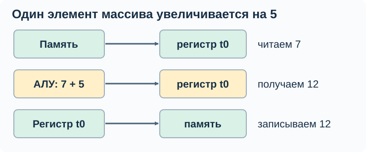

Что делает процессор с одной строкой C++
void add_five(int& value) {
value = value + 5;
}
Допустим, в элементе массива лежит 7 и мы передали этот элемент в add_five. После вызова там должно быть 12. Как процессор доберётся до семёрки, если в исходнике написано только имя value?
Адрес, регистр и команда
Компилятор переводит операции C++ в машинные инструкции выбранного процессора. Возьмём 32-битный процессор RISC-V и платформу с 32-битным int. Будем прибавлять 5 к числам, для которых результат помещается в int. Пусть адрес элемента уже передан в регистре a0. Регистр — маленькое хранилище внутри ядра, которое инструкция может назвать прямо. Другой регистр, t0, используем как временный. Ниже один возможный фрагмент тела функции в записи на ассемблере.
lw t0, 0(a0)
addi t0, t0, 5
sw t0, 0(a0)

Одна строка на процессоре
Выполни value = value + 5; по одной машинной инструкции. Определи момент, когда результат уже вычислен, а в памяти ещё лежит старое число.
lw t0, 0(a0)— прочитать из памятиaddi t0, t0, 5— прибавить 5sw t0, 0(a0)— записать по адресу
Регистр a0 всё время хранит адрес 0x1000. Знак вопроса означает, что прежнее значение t0 нам неизвестно. В этой модели RISC-V показан один возможный вариант компиляции.
| Инструкция | Что она делает | Что стало с числом |
|---|---|---|
lw — load word |
Читает четыре байта по адресу из a0 со смещением ноль |
В t0 теперь 7 |
addi — add immediate |
Передаёт значение регистра и число 5 в арифметико-логическое устройство (АЛУ) | В t0 теперь 12. По адресу пока лежит 7 |
sw — store word |
Записывает четыре байта из t0 по тому же адресу |
Следующее чтение этого элемента программой даст 12 |
Ноль в 0(a0) — отступ от адреса. После всех трёх инструкций a0 всё ещё указывает на тот же элемент. Получить данные процессор может из кэша, поэтому команда чтения может обойтись без обращения к микросхеме оперативной памяти. Здесь «в памяти» означает значение, которое программа прочитает по этому адресу.
Откуда процессор узнаёт, что делать дальше?
Машинная инструкция — набор битов. Часть битов обозначает операцию, другие поля задают регистры или число. Счётчик команд хранит адрес инструкции. Процессор выбирает команду по адресу, распознаёт её поля и выполняет действие. В обычной последовательности управление переходит к следующей инструкции. Условный переход может заменить следующий адрес другим. Так можно вернуться к началу цикла, если остались элементы.
Один такт — один период тактового сигнала. У разных команд бывают разные задержки. В современном ядре несколько инструкций могут одновременно находиться на разных стадиях обработки. Поэтому число строк C++ и даже число машинных инструкций сами по себе не дают времени выполнения.
Всегда ли возникнут эти три инструкции?
C++ задаёт наблюдаемый результат. Компилятор может встроить функцию в место вызова, удержать промежуточное значение в регистре или заранее вычислить константу. Если позже результат вообще не используется, вычисление иногда исчезает целиком. Для Python путь тоже проходит через процессор. Например, в CPython операции программы выполняет интерпретатор, и сложение двух объектов Python требует иной последовательности машинных инструкций.
В лабораторной Berkeley можно увидеть похожий цикл: чтение слова, прибавление единицы, запись и переход к новому адресу. Описание команд RISC-V · CS61C, осень 2020, cache.s.